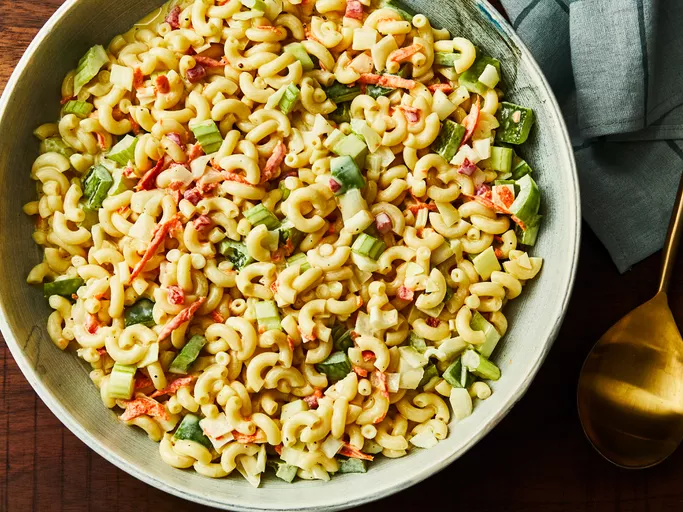
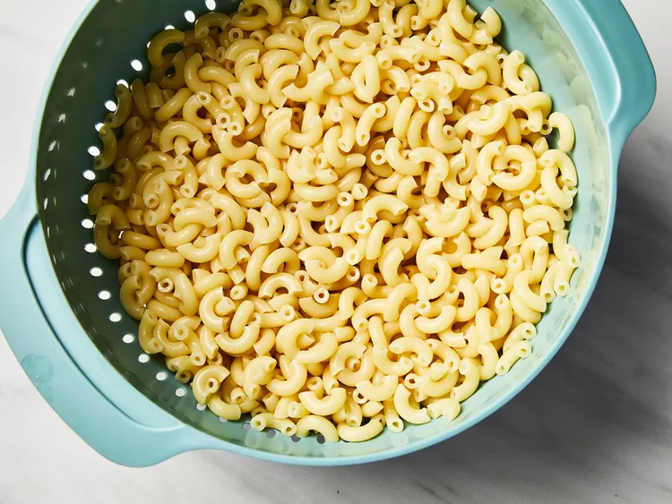
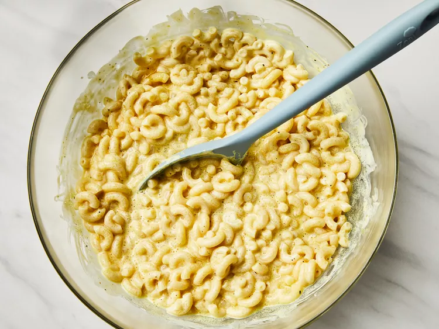
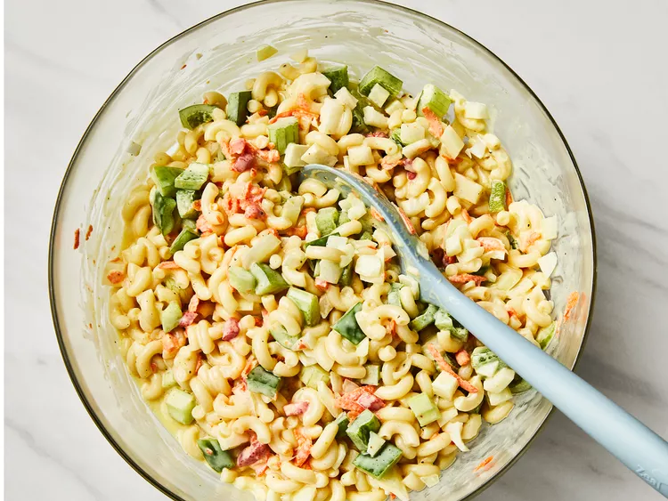
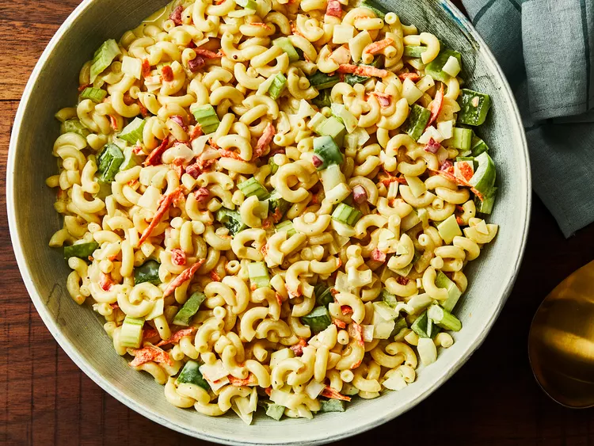

Classic Macaroni Salad

How to make Macaroni Salad
You’ll find a detailed ingredient list and step by step instructions in
the recipe below, but let's go over the basics:
This flavorful macaroni salad is easy to make and is the perfect
crowd-pleasing dish to bring to your next picnic or potluck.
Macaroni Salad Ingredients
These are the ingredients you’ll need to make this macaroni salad recipe:
-
Macaroni: Of course, you’ll need macaroni noodles!
-
Condiments: A creamy blend of mayonnaise and yellow
mustard adds tons of flavor.
-
Sugar and vinegar: White sugar adds a dose of
sweetness, which is pleasantly balanced by white vinegar.
-
Seasonings: This macaroni salad is simply seasoned with
salt and ground black pepper.
-
Vegetables: You’ll need celery, an onion, and a bell
pepper. Grated carrots and pimento peppers are optional, but they add
welcome flavor and color.
How Do You Make Macaroni Salad?
Here’s a brief overview of what you can expect when you make homemade
macaroni salad:
- Cook the macaroni in salted water.
-
Mix the mayonnaise, sugar, vinegar, mustard, and seasonings together.
-
Stir in the macaroni and remaining ingredients. Chill in the
refrigerator.
How Long Does Macaroni Salad Last?
This homemade macaroni salad can be stored in an airtight container in the
refrigerator for up to five days. We don’t recommend freezing this recipe,
as the noodles will likely become mushy after they are thawed.
Ingredients
- 4 cups uncooked elbow macaroni
- 1 cup mayonnaise
- ⅔ cup white sugar
- ¼ cup distilled white vinegar
- 2 ½ tablespoons prepared yellow mustard
- 1 ½ teaspoons salt
- ½ teaspoon ground black pepper
- 2 stalks celery, chopped
- 1 large onion, chopped
- 1 green bell pepper, seeded and chopped
- ¼ cup grated carrot (Optional)
- 2 tablespoons chopped pimento peppers (Optional)
Directions
Step 1
Gather all ingredients.

Step 2
Bring a large pot of lightly salted water to a boil. Cook elbow macaroni
in the boiling water, stirring occasionally, until tender yet firm to the
bite, about 8 minutes. Rinse under cold water and drain.

Step 3
Mix mayonnaise, sugar, vinegar, mustard, salt, pepper, and macaroni
together in a large bowl.

Step 4
Stir in celery, onion, green pepper, carrot, and pimentos.

Step 5
Refrigerate salad for at least 4 hours before serving, but preferably
overnight.
